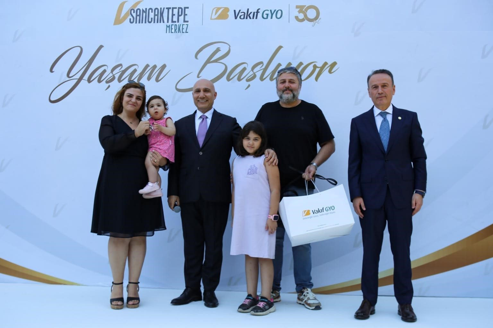
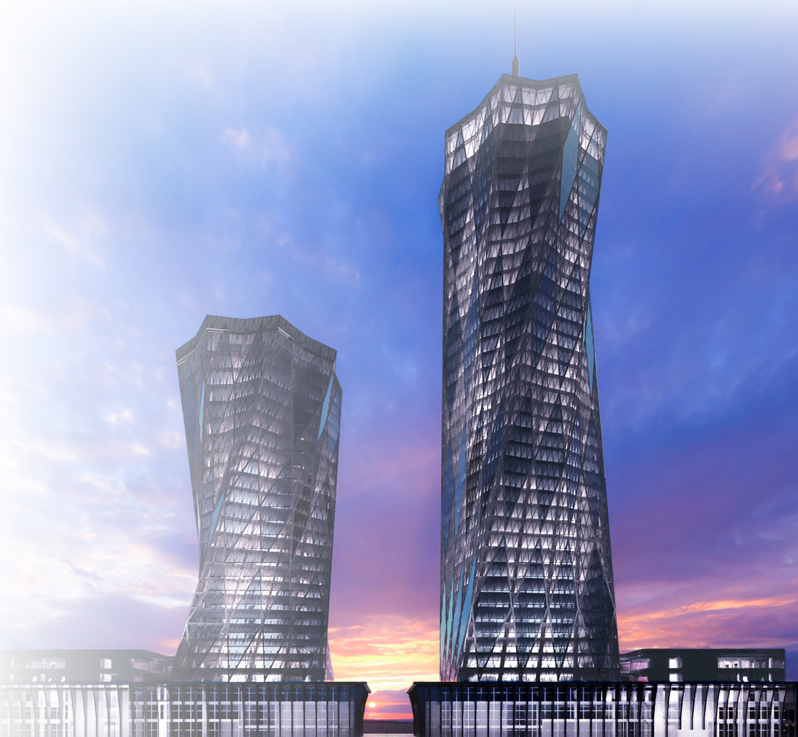
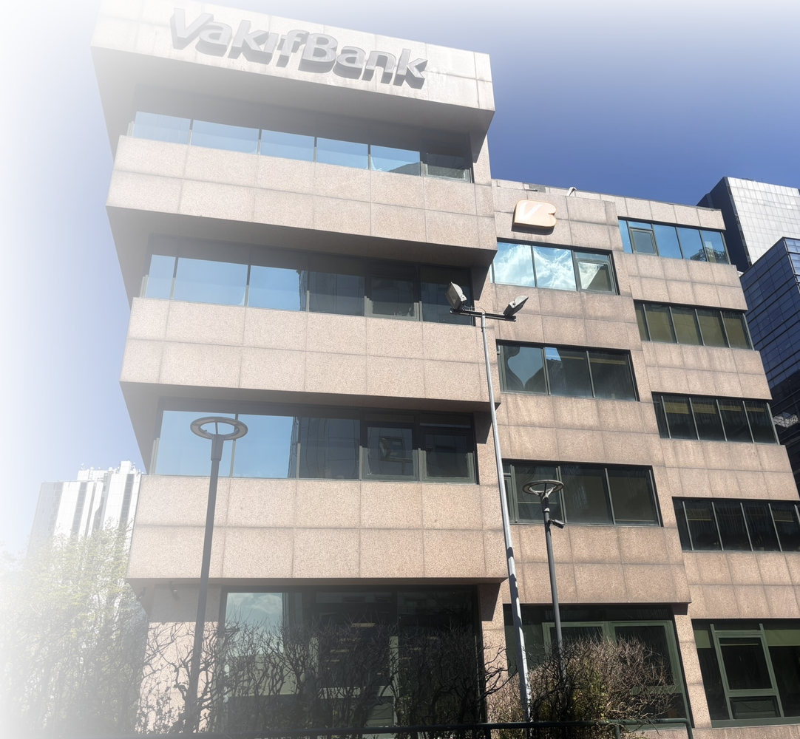
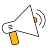
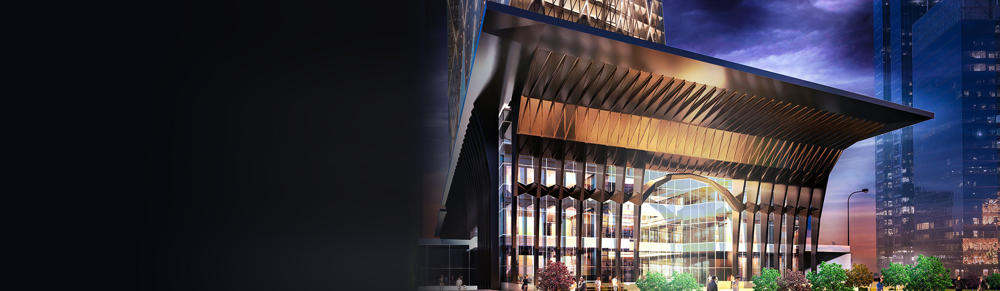

Vakıf GYO — Geleneğin Gücü, Geleceğin İnşası
Yatırımcı İlişkileri
₺
Ay
Aylık Taksit
0,00 ₺
Toplam Geri Ödeme
0,00 ₺
%2,79
%0
%0
Son Fiyat
Günlük Değişim
Son Fiyat
Günlük Değişim
VKGYO
3,27
%1,24
XGMYO
3.412,58
%0,86
XU100
10.284,12
-%0,32
XUSRD
13.905,40
%0,41
XKURY
12.118,77
%0,27

VSancaktepe Merkez’de Yaşam Başlıyor
Teslime özel avantajlardan yararlanma fırsatını kaçırmayın
Daire Planları

Sürdürülebilirlik
Sürdürülebilirlik, Vakıf GYO’nun temel stratejilerinden biridir. Çevresel, sosyal ve yönetişim (ESG) prensipleriyle faaliyet gösteren şirketimiz, gelecek nesillere daha yaşanabilir bir dünya bırakmayı amaçlamaktadır.

Yatırımcı İlişkileri

Portföy

Duyurular
Pay Sahipleri Bilgilendirme
Ödüller
Vakıf GYO, EFQM Küresel Ödülü’nün sahibi oldu.
IK Politikamız
IK Politikamız & Başvuru Formu

Vakıf GYO
30 Yaşında
Türkiye’nin ilk gayrimenkul yatırım ortaklığı olarak, 30 yıldır güçlü Türkiye’nin temellerini atıyoruz. Birlikte nice yıllara…